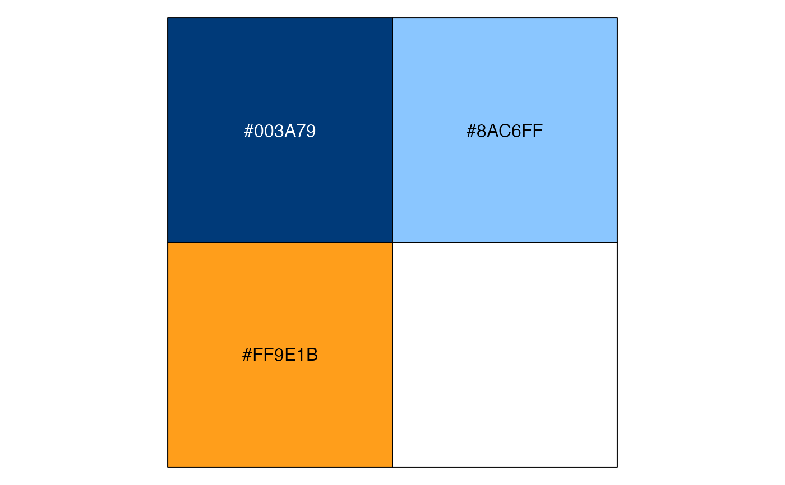

brookings_view_palette displays the colors and hexadecimal codes for colors in brookings palettes.
brookings_view_palette(palette = "brand1")| palette | Options are |
|---|
Different shades of the same hue, or of similar hues can be used when the associated values are related.
Colors on the opposite ends of the spectrum. Use Brookings Blue with Secondary colors.
Where applicable, use colors that are associated with certain concepts. For e.g., semantic1, semantic2, and semantic3 could show subsets of gender data (female, male and other).
Shows pros, cons and neutral, or positive, negative and neutral data.
Use red and blue of similar intensity to represent data related to political parties in the US. Yellow in political3 and political4 represents ‘Independent’ category
A pleasing option using Brookings Blue and accent yellow.
brookings_view_palette()
#> [1] "c(#FF9E1B, #8AC6FF, #003A79)"
brookings_view_palette('brand1')
#> [1] "c(#FF9E1B, #8AC6FF, #003A79)"
